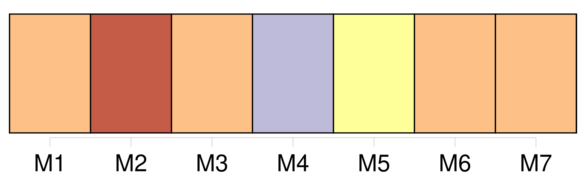
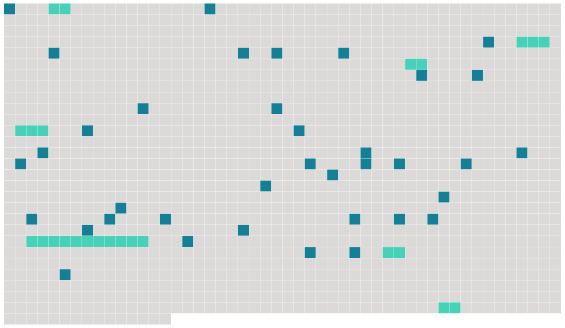

Longueur nb maillons : 44 mentions |
 |
[Elle] était jolie, [sa femme] , charmante, une petite blonde frisottée, vive, potelée, [qui] semblait l'adorer. [8 phrases] J'ai compté sur toi pour tenir compagnie à [Berthe]
» Je [lui] serrai la main : « [Vous] êtes gentille comme tout. [3 phrases] Aussitôt qu'il fut parti, une sorte de gêne singulière naquit brusquement entre [sa femme] et moi. [2 phrases] [Elle] ne répondit rien et [restait] en face de moi, de l'autre côté de la cheminée, la tête baissée, le regard indécis, un pied tendu vers la flamme, comme perdue en une difficile méditation. [4 phrases] Puis [Berthe] me dit : « Mettez donc une bûche au feu, [mon] ami, vous voyez bien qu'il va s'éteindre. [3 phrases] [La jeune femme] releva sur moi [ses] yeux, des yeux qui me parurent étranges. « Il fait trop chaud, maintenant, dit [-elle] ; allons donc là-bas, sur le canapé. [3 phrases]
»
» [Elle] se tut, puis [reprit] : [1 phrases]
« Racontez [-moi] ça, » dit [-elle]
Je [lui] racontai une histoire quelconque. [Elle] m'écoutait attentivement, avec des marques fréquentes d'improbation et de mépris ; et soudain : « Non, vous n'y entendez rien. Pour que l'amour fût bon, il faudrait, il [me] semble, qu'il bouleversât le coeur, tordit les nerfs et ravageât la tête ; il faudrait qu'il fût--comment dirai -je?? --dangereux, terrible même, presque criminel, presque sacrilège, qu'il fût une sorte de trahison ; [je] veux dire qu'il a besoin de rompre des obstacles sacrés, des lois, des liens fraternels ; quand l'amour est tranquille, facile, sans périls, légal, est -ce bien de l'amour?? [1 phrases]
[Elle] avait pris, en parlant, un petit air indifférent, sainte-nitouche ; et, appuyée sur les coussins, [elle] s'était allongée, couchée, la tête contre mon épaule, la robe un peu relevée, laissant voir un bas de soie rouge que les éclats du foyer enflammaient par instants. Au bout d'une minute : « [Je] vous fais peur », dit [-elle] [1 phrases] [Elle] s'appuya tout à fait contre ma poitrine et, sans me regarder : « Si [je] vous disais, [moi] , que [je] vous aime, que feriez -vous??
» Et avant que j'eusse pu trouver ma réponse, [ses] bras avaient pris mon cou, avaient attiré brusquement ma tête, et [ses] lèvres joignaient les miennes. [4 phrases] devenir l'amant de [cette petite folle perverse et rusée, effroyablement sensuelle sans doute] , à qui [son] mari déjà ne suffisait plus!! [4 phrases] rôle fort sot et, de plus, fort difficile, car [elle] était affolante en [sa] perfidie, [cette fille] , et enflammée d'audace, et palpitante et acharnée. [7 phrases] non, [elle] était... [10 phrases]
[Sa femme] évidemment sapait notre amitié ; et peu à peu il m'éloigna de chez lui ; et nous avons cessé de nous voir. |
 |
Il est possible de télécharger la ressource sur la page Ortolang |
Si vous avez des questions ou vous voyez des erreurs, merci d'envoyer un mail à silvia.federzoni89@gmail.com |